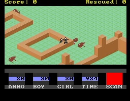
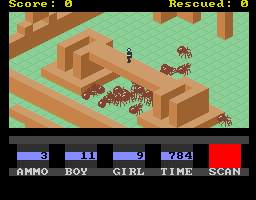

Nathan loves Ant Attack. He's spent far, far too much time playing Sandy White's classic over the years, and made sure that he reviewed it in the very first issue of YS3. He even made a start on a remake for the PC, which remains in out-of-processor-cycles hell even now. (Tch.)
Tyrone L Cartwright also loves Ant Attack. After cleverly disassembling the original and working out its every nuance, he's now working on his own remake. Unlike Nathan's, however, it's already extremely playable, to the extent that it's pretty darned tricky to tell the difference between the original and Ant Attack PC. In addition to the girl/boy options of the original, AAPC also allows you to modify the number of ants that can chase you at a time.
The current version, Release Zero, is also available for download from http://www.whimsy.demon.co.uk/antattack/, so if you're a fan of the original go and get Mr Cartwright's version right now!
|